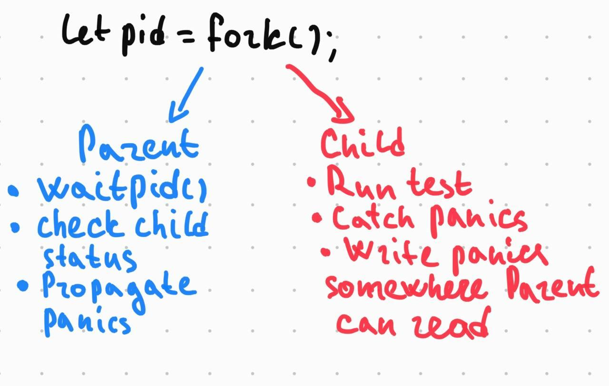
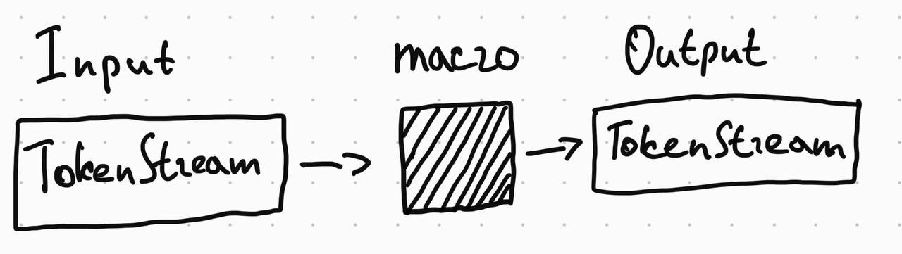

Tests that affect networking subsystem are destined to be error-prone. Network stack acts as a shared environment, so tests can’t really run in parallel. God forbid if you tickle the firewall rules and the test fails to restore the original state. You end up frustrated and cut-out of the internet. Does this all sound familiar? Luckily, FreeBSD provides a handy workaround to all these issues – VNET jails and Rust’s proc_macro_attribute takes the ergonomic on the whole new level.
The problem
Consider the following example. You develop a Container Network Interface plugin. Likely you will need to
Create interfaces, such as virtual ethernet interfaces (epair(4)), one side of which will be attached to the bridge, the other side will be inside the container.
Manage routes within the container (route(4))
Create network access tables, configure firewalls and such. PF, one of FreeBSD built-in routers does the excellent job here.
Any attempt to test this functionality in Rust would result in unexpected obstacles, because tests run in parallel by default and will race for global resources, e.g. create or delete the default route at the same time.
In these tests, the operating system itself becomes the proverbial global state and it is almost impossible to create a reliable test fixture.
The solution
FreeBSD pioneered system-level virtualization and had the ability to run multiple network stacks at the same time since version 4.8-ish (that was in 2003). Implementing a Clonable Network Stack in the FreeBSD Kernel.
As of version 12.0, the VIMAGE kernel option has been stabilized and enabled by default. That means we can create so-called VNET jails, jails having their own virtualized network stack.
Starting a new VNET jail is as easy as calling chroot, it’s just a matter of making a single syscall (jail(2)). Of course, rusty bindings are available jail-rs.
Technically, we could create a new jail for each network stack-related test and then tear down the jail without having to worry about cleaning up resources properly. Creating and destroying jails, however, can become cumbersome and impractical in terms of code repetition.
The ideal UX would be to mark a test to be run in a jail, like this:
#[jailed_test]
fn test_delete_default() {
Interface::new("lo0")
.expect("failed to get iface socket")
.address("127.0.0.1", "127.255.255.255", "255.0.0.0")
.expect("failed to assign expected address");
route::add_default("127.0.0.1").expect("failed to add default route");
route::delete_default("127.0.0.1").expect("failed to delete default route");
// etc
}Tokio and actix among others use proc_macro_attribute to achieve this (example).
The plan

Roughly speaking, the macro should follow these steps:
Create a jail without a running process, by setting
persistparameter to true. libjail-rs does this by default.fork(2) the child process and attach it to the jail via
jail_attachsyscall. libjail-rs binding.Child executes the test body.
Child communicates test results to parent via some form of IPC.
Parent waits for the child process and propagates the results to the caller.
Let’s walk through each step.
Step 0. Macro scaffold
Rust procedural macros get a stream of Rust tokens on input and produce Rust tokens on output.1

The current golden standard for writing Rust procedural macros includes two libraries:
- syn, a parser for Rust token streams.
- quote provides a handy way to produce Rust token streams by writting Rust code.
Using these libraries, we can write a simple procedural macro attribute that’d be a drop-in replacement for the standard #[test] attribute.
use proc_macro::TokenStream;
use syn::ItemFn;
#[proc_macro_attribute]
pub fn jailed_test(_attrs: TokenStream, item: TokenStream) -> TokenStream {
let input = syn::parse_macro_input!(item as ItemFn);
let fn_name = input.sig.ident;
let body = input.block;
quote::quote!(
#[test]
fn #fn_name() {
#body
}
)
.into()
}As you can see, we utilize syn::parse_macro_input! to parse the input to get the test name and method’s body.
When we use quote::quote to produce tokens from what seems the regular Rust code with some interpolation.
We are going to use the very limited subset of features provided by syn & quote. Whose who interested in complicated and wonderful things should visit https://github.com/dtolnay/proc-macro-workshop.
Step 1. Jail creation
First things first, we are going to use third-party libraries to create jails, organize IPC and so on.
Rust procedural macros should live in a separate crate and can’t have public reexports.
Say, we have a proc macro like this:
#[proc_macro_attribute]
pub fn jailed_test(_attrs: TokenStream, item: TokenStream) -> TokenStream {
quote::quote!(
#[test]
fn jailed_test() {
use jail::StoppedJail;
/// ...
}
)
.into()
}This makes an assumption that the crate using macro explicitly depends on jail-rs!
To mitigate this, let’s assume there’s a crate (say, test_helpers) reexporting all dependencies of the procedural macro.
Let’s augment our example to create a jail:
#[proc_macro_attribute]
pub fn jailed_test(_attrs: TokenStream, item: TokenStream) -> TokenStream {
let input = syn::parse_macro_input!(item as ItemFn);
let fn_name = input.sig.ident;
let block = input.block;
let body = quote::quote! {
use test_helpers::jail::StoppedJail;
let jail = StoppedJail::new("/")
.param("vnet", jail::param::Value::Int(1))
.param("children.max", jail::param::Value::Int(100))
.start()
.expect("Couldn't start jail");
#block
jail.defer_cleanup()
.expect("failed to defer jail clean up");
};
quote::quote!(
#[test]
fn #fn_name() {
#body
}
)
.into()
}So far so good. We have created a jail, setting vnet parameter to virtualize the network stack and children.max to allow the newly created jail to have up to 100 child jails.
Also we call jail.defer_cleanup() to clear the persist flag and allow the kernel to stop the jail once our test finishes.
However, the test still runs outside of the jail.
Step 2. Putting the test inside the jail using fork and jail_attach syscalls.
In this step, we are spinning a new child process to run test code and putting it to jail. For brevity, I’m going to omit some code annotating the omitted parts using comments, if needed. The full example source code can be found at the end of the article.
FreeBSD has jail_attach syscall:
The jail_attach() system call attaches the current process to an existing jail, identified by jid.
That’s exactly what we need. We are going to use fork(2) syscall, which creates a child process which is an identical copy of the currently running process.
As we recall, Rust runs tests in multiple threads. Does that mean that after fork-ing the jail
For fork and waitpid syscalls , we’ll utilize nix library, which provides Rust-friendly bindings to *nix APIs.
use test_helpers::nix::unistd::{fork, ForkResult};
match fork() {
Ok(ForkResult::Child) => {
jail.attach().unwrap();
let result = std::panic::catch_unwind(|| {
#block
});
},
Ok(ForkResult::Parent { child: child }) => {
},
_ => panic!("Failed to fork"),
}Async-signal safety.
A usual use-case for the fork call is to subsequently call exec or exit as soon as possible, since inside the forked environment one can safely call the limited subset of functions, so called async-signal-safe functions.
From fork(2) manpage:
The child process has only one thread, corresponding to the calling thread in the parent process. If the process has more than one thread, locks and other resources held by the other threads are not released and therefore only async-signal-safe functions (see sigaction(2)) are guaranteed to work in the child process until a call to execve(2) or a similar function.
Simply put, locks are not released, and there’s a risk of deadlocks in child process.
cargo test basically is a multithreaded program, so we should be extra-careful with locks.
sigaction(2) provides the list of async-signal-safe functions. memcpy is a safe function, which effectively means that Rust’s moves semantics works just fine.
What about heap-allocated objects? Under the hood, malloc implementations will likely use mmap and munmap calls, which are not marked as async-signal-safe. Moreover, malloc implementations must use some sort of synchronization primitives (read mutexes) to protect their internal structures in multithreaded environments.
That’s a disaster for our plan, isn’t it? Theoretically, yes, but practically FreeBSD’s allocator jemalloc2 minimizes use of locking. Moreover, jemalloc makes an attempt to free locks using a pthread_atfork(3) fork handler3.
To conclude, tests should not acquire locks (shared with other tests), should minimize the use of global environment, and should generally stick to async-signal-safe functions. While it might sound like a show-stopper for a general case, it doesn’t matter much for our particular scenario, since the tests mainly target the network stack and the stack is unique to each test thanks to VNET capabilities.
Step 3. Child executes the test body.
This one is fairly simple. We execute the test, child makes some assertions, eventually exits successfully or panics. In the latter case we’ll need to communicate with parent that test has failed & the panic body itself.
Normally, panicking processes exit with a non-zero status, so the parent process is able to tell that a child terminated abnormally (with zero signal). At the time of writing, however, this is not the case due to this bug, so we’ll need to implement a workaround.
The workaround I came up with is brain-dead. We are going to abort the process, and the parent will be able to distinguish this situation via waitpid(2).
So the plan is: first catch the panic, then abort. Yup, to the code.
jail.attach().unwrap();
let result = std::panic::catch_unwind(|| {
#block
});
if let Err(err) = result {
// The place for inter-process communication!
std::process::abort();
};Not every panic unwinds Panics in Rust can be implemented as aborts to save that precious disk space. Our trick won’t work in this case.
Step 4. Child communicates test results to parent via some form of IPC.
Parent & child have their own address spaces. That means we can’t use the heap to communicate the exit status.
However, we can create an anonymous memory-mapped region, into which the child can write, and from which parent can read.
How will we serialize the panic? It turns out, the result returned by std::panic::catch_unwind contains an error, which can be downcasted to a string. Different approach are possible here, we are going to use bincode library for (de)serialization.
// Imports omitted
use test_helpers::memmap::MmapMut;
use test_helpers::bincode;
let mut mmap = MmapMut::map_anon(1024).expect("failed to create a mmap");
// Jail creation omitted
match fork() {
Ok(ForkResult::Child) => {
jail.attach().unwrap();
let result = std::panic::catch_unwind(|| {
#block
});
if let Err(err) = result {
err.downcast_ref::<String>()
.and_then(|string| {
bincode::serialize(&format!("{:?}", string))
.and_then(|serialized| {
Ok((&mut mmap[..]).write_all(&serialized[..])?)
}).ok()
}).unwrap_or(());
std::process::abort();
};
},
Ok(ForkResult::Parent { child: child }) => {
},
_ => panic!("Failed to fork"),
}One additional limitation imposed here is the memory map size. It’s 1024 bytes, which’s enough for relatively short panics. Think of panics generated by diesel or any other library with complicated types.
Step 5. Parent waits for the child process and propagates the results to caller.
Almost there. Now, parent needs to wait for the child to complete (either exiting sucessfully or issuing a SIGABRT signal). Let’s not forget to tell the kernel that we don’t need the jail anymore by clearing the persist flag.
match fork() {
Ok(ForkResult::Child) => {
// Omitted
},
Ok(ForkResult::Parent { child: child }) => {
let status = waitpid(child, None)
.expect("failed to wait the child process");
jail.defer_cleanup()
.expect("failed to defer jail clean up");
match status {
WaitStatus::Exited(_, 0) => (),
WaitStatus::Signaled(_, Signal::SIGABRT, _) => {
let error: String = bincode::deserialize(&mmap).expect(
"Test failed, but result couldn't be deserialized"
);
panic!("{}", error);
},
status => {
panic!("Unexpected jailed process status {:?}", status);
}
}
},
_ => panic!("Failed to fork"),
}Conclusion
Although async-signal-safety imposes many limitations on the forked environment, for this case the ability to not worry about restoring the network stack state after a test run and the ability to run such tests in parallel outweighs the reduced safety guarantees.
That’s it folks. Can’t stress this enough, don’t use this technique in user application code.
The full macro code alongside boilerplate is available on GitHub.
The examples of tests using this macro can be found there as well:
Example 1. Programmatic NAT configuration with PF
#[test_helpers::jailed_test]
fn test_nat_rules_are_populated() {
let interface = "wlan0";
create_nat(interface, "172.24.0.0/24");
assert!(get_anchor_rules("knast_anker").contains(&format!(
"nat on {interface} inet from <jails> to any -> ({interface}:0)",
interface = interface
)));
}Example 2. Programmatically add a default route.
#[test_helpers::jailed_test]
fn test_add_default() {
setup_lo();
add_default("127.0.0.1").expect("failed to add default route");
let content = routing_tables_content()
.expect("(netstat) failed to get routing tables content");
assert!(content.contains("default 127.0.0.1"));
}Yes, mathematicians, it’s a homomorphism!↩︎
Yes, Rust folk, it’s the default Rust allocator of the past. Read more here: https://doc.rust-lang.org/edition-guide/rust-next/no-jemalloc.html↩︎
It’s not a silver bullet against malloc-induced deadlocks. See https://github.com/freebsd/freebsd-src/blob/098dbd7ff7f3da9dda03802cdb2d8755f816eada/contrib/jemalloc/src/jemalloc.c#L3840-L3852↩︎